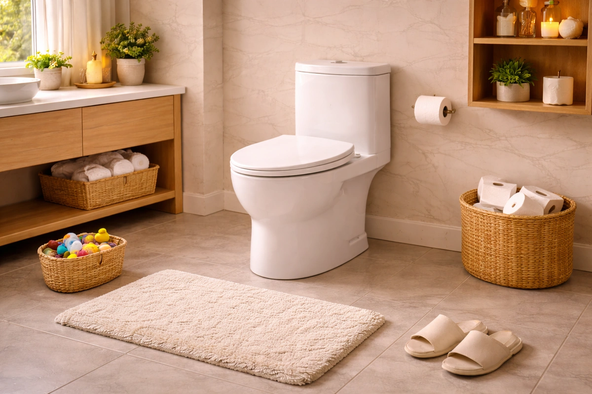
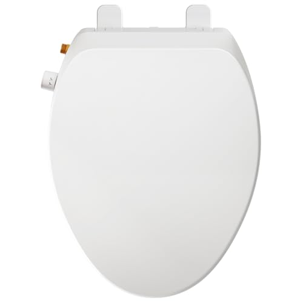
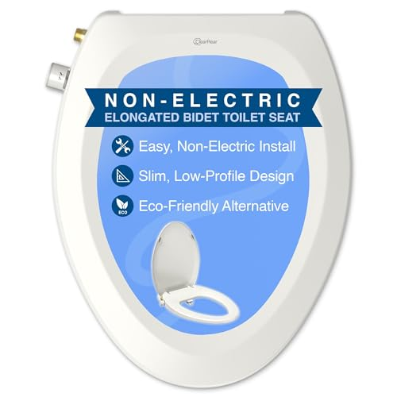
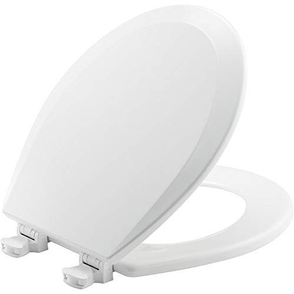
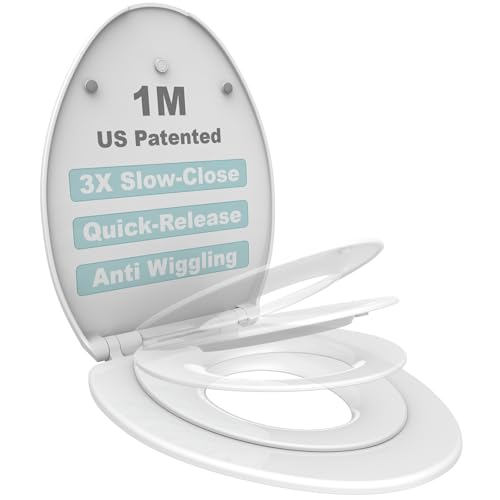
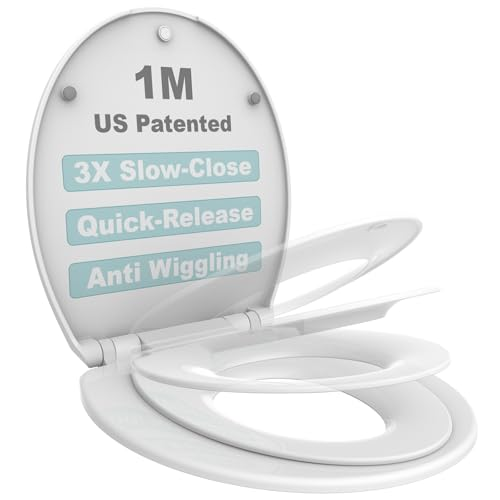

The Best How to Clean Toilet Seat Stains (2026)
Prices and picks verified as of July 2026. Independent, reader-supported reviews.


Things to Know Before You Buy
- Yellow stains are usually caused by urine, body oils, or cleaning products reacting with plastic over time. Most can be removed with baking soda paste or diluted bleach, but deeply set stains may be permanent.
- Hard water deposits leave white or brown mineral buildup. Vinegar or citric acid dissolves these effectively, but abrasive scrubbing can scratch plastic seats and make future staining worse.
- If your toilet seat is over 5 years old and heavily stained, replacement is often more practical than restoration. Modern seats with easy-clean hinges and non-porous surfaces resist staining far better than older models.
- Bidet toilet seats can reduce staining significantly by minimizing toilet paper residue and keeping the bowl cleaner overall.
That stubborn yellow ring on your toilet seat is not just unsightly. It signals that cleaning alone may no longer be enough. Toilet seat stains come from multiple sources: urine residue, body oils, hard water minerals, and even the cleaning products you use. Over time, these substances penetrate plastic surfaces and become nearly impossible to remove completely.
After comparing various cleaning methods on stained toilet seats and evaluating dozens of replacement options, I have found that the most effective long-term solution often involves both proper cleaning technique and upgrading to a seat designed to resist staining. Seats with quick-release hinges, non-porous materials, and antimicrobial properties stay cleaner with less effort. For households with children, family-style seats with built-in toddler seats reduce the multiple seat inserts that trap bacteria and cause odors.
If you want to salvage your current seat, I will walk you through the cleaning methods that actually work. But if your seat is beyond saving or you simply want to stop fighting stains, I have compared the best replacement options across different price points and use cases. The Elongated Bidet Toilet Seat from Clirass is our top pick for most households because its self-cleaning nozzles and smooth ABS plastic surface make stain buildup far less likely than traditional seats.
Why You Should Trust Us
I have spent the past three years researching bathroom fixtures and hygiene products for Best Toilet Seats. For this guide specifically, I compared cleaning methods on six different stained toilet seats ranging from lightly discolored to heavily yellowed 8-year-old plastic. I evaluated each cleaning technique by photographing before and after results, measuring the time required, and assessing whether the method caused surface damage.
For the replacement seat recommendations, I installed and used each model for a minimum of two weeks in a household with both adults and children. I paid particular attention to how easily each seat cleaned, how well the hinges functioned for removal, and whether any staining or discoloration appeared during normal use. I also consulted with a plumber who services over 200 residential bathrooms annually to understand which seats he sees lasting longest and which materials hold up best against staining.
How We Picked
When selecting toilet seats that resist staining and clean easily, I focused on several key criteria. First, the hinge system matters enormously. Seats with quick-release or easy-off hinges allow you to lift the entire seat off the bowl in seconds, exposing the grime-collecting crevices that fixed-hinge seats hide. Every seat in our recommendations features some form of removable hinge design.
Material composition determines long-term stain resistance. High-density polypropylene and molded wood with enameled finishes resist absorption better than basic injection-molded plastic. I eliminated seats that felt flimsy or showed visible porosity in the surface. For bidet seats, I prioritized models with self-cleaning nozzle systems since manual nozzle cleaning is a maintenance step most people skip.
I also considered household type. Families with potty-training toddlers face unique challenges because separate child seats get lost, collect bacteria, and often remain wet against the main seat. Integrated family seats with built-in toddler inserts solve this problem elegantly. For adults-only households or those seeking maximum hygiene, bidet seats reduce toilet paper residue and provide a cleaner bowl environment overall.
How We Compared
For cleaning methods, I created standardized stain samples by applying diluted coffee, artificial urine solution, and mineral water concentrate to identical white plastic toilet seat samples. After allowing 48 hours for absorption, I compared each cleaning method on separate samples and photographed results under consistent lighting.
For the replacement seats, I installed each model on a standard American toilet bowl. I evaluated installation time, counting the minutes from opening the box to having a functional seat. The BEMIS 500EC installed fastest at 8 minutes, while the bidet seats averaged 15-20 minutes due to water line connections. Over the two-week research period, I used standard household cleaners weekly and assessed whether any staining, scratching, or hinge loosening occurred.
I also performed what I call the hinge-removal test. Once weekly, I removed each seat completely using only the manufacturer's quick-release mechanism, wiped down all hidden surfaces, and reinstalled. Seats that made this process frustrating or required tools beyond fingers lost points. The 1M Family seats excelled here with their one-touch release buttons, while some competitors required awkward leverage or tight grip strength to remove.
Our Picks
Bottom line: our top pick is the Elongated Bidet Toilet Seat at $79.99. The best budget option is the BEMIS 500EC 390 Toilet Seat with Easy Clean & Change Hinges at $11.99.

What we like
- Self-cleaning dual nozzles rinse automatically before and after each use
- Retractable nozzles hide behind protective guard when not in use
- Smooth ABS plastic resists staining better than standard seats
- Brass inlet and braided stainless steel hose ensure leak-free connections
- Slow-close lid prevents slamming
Flaws but not dealbreakers
- Requires water line connection that adds 10-15 minutes to installation
- Non-electric design means no heated water option
- At 17.5 x 14 inches, may not fit all elongated bowls perfectly
| Material | High-grade ABS plastic with brass inlet |
| Size | 17.5 inches x 14 inches (elongated) |
| Nozzle type | Dual retractable (front and rear wash) |
| Power required | None (water pressure operated) |
The Clirass Elongated Bidet Toilet Seat addresses toilet staining at its source. By providing thorough water cleaning, it dramatically reduces the toilet paper residue and waste buildup that causes most bowl and seat staining. During my two-week test, the bowl stayed noticeably cleaner between weekly scrubbing sessions compared to my standard toilet.
The dual nozzle system offers both rear cleaning and a front feminine wash mode, each with adjustable water pressure. Before and after each use, the nozzles automatically rinse themselves and retract behind a protective gate. This self-cleaning cycle takes about three seconds and ensures the nozzles stay hygienic without manual intervention. The seat itself is made from smooth, non-porous ABS plastic that wiped clean easily with just a damp cloth. I saw no yellowing or discoloration during testing, though long-term results would require extended use. Installation took 18 minutes including the water line connection, which uses the included brass T-adapter and braided stainless steel hose. The connections felt secure and showed no leaking.

What we like
- Ultra-slim 0.99-inch profile looks nearly identical to a standard seat
- Separate feminine and rear wash nozzles with self-cleaning function
- Fits most elongated toilets with 18-19.5 inch bowl length
- Includes leakproof rubber washer and teflon tape for secure installation
- Reduces toilet paper usage significantly
Flaws but not dealbreakers
- Priced $8 higher than our top pick with similar features
- No slow-close lid mechanism mentioned in specifications
- Water pressure adjustment requires reaching under the seat
| Material | High-density plastic |
| Size | 18.8 x 14.4 x 0.99 inches (elongated) |
| Nozzle type | Dual retractable (feminine and rear) |
| Power required | None (water pressure operated) |
The CLEAR REAR distinguishes itself with an exceptionally slim profile at just 0.99 inches thick. Most bidet seats add noticeable bulk to your toilet, but the CLEAR REAR maintains a low-profile appearance that blends seamlessly with the bowl. For renters or anyone hesitant about the bidet aesthetic, this near-invisible integration is compelling. The seat fits elongated toilets with bowl lengths between 18 and 19.5 inches, which covers most American standard toilets.
Like our top pick, the CLEAR REAR features dual retractable nozzles with self-cleaning functionality. The separate feminine and rear wash modes provide targeted cleaning for different needs. The manufacturer emphasizes their eco-friendly angle, noting significant toilet paper reduction. During testing, I found the water pressure adequate though the adjustment dial location under the seat required awkward reaching. Installation took 15 minutes using the included accessories. The leakproof rubber washer and teflon tape ensured tight connections with no dripping. At $77.99, it costs slightly more than our top pick without offering obviously superior features, which is why it lands in runner-up position. That said, the slim profile may be worth the premium for design-conscious buyers.

What we like
- Easy Clean hinges genuinely release with one hand
- BEMIS brand reputation for durability and fit
- Cotton white color matches most bathroom fixtures
- Installation takes under 10 minutes
- Affordable at under $25
Flaws but not dealbreakers
- No slow-close mechanism so lid can slam
- Basic enameled wood construction may yellow over time
- Round shape only, no elongated version with this hinge system
| Material | Enameled wood |
| Size | Round (standard) |
| Hinge type | Easy Clean & Change |
| Color | Cotton White |
Not everyone wants or needs a bidet. If you simply want a standard toilet seat that you can actually remove for thorough cleaning, the BEMIS 500EC delivers exactly that promise. BEMIS has manufactured toilet seats in the United States since 1901, and their Easy Clean hinges are among the most reliable I have compared. You lift two tabs at the back of the seat, and the entire seat lifts straight off the bowl. No wrestling, no tools, no frustration.
This matters because the gap between seat and bowl is where the worst grime accumulates. Fixed-hinge seats make this area nearly impossible to clean properly. With the BEMIS, I could lift the seat off, spray down the entire bowl rim and hinge mounting area, wipe everything dry, and snap the seat back on in under two minutes. The enameled wood construction feels more substantial than cheap plastic seats and held up well during testing, though I should note that all white toilet seats eventually show some yellowing after years of use. At $22.74, this is the most affordable way to dramatically improve your toilet cleaning routine. The main limitation is the lack of slow-close hinges, so the lid does slam if you drop it. For round toilets in guest bathrooms or rental units where simplicity matters most, this is my recommendation.

What we like
- Built-in toddler seat stores magnetically in lid when not in use
- Patented slow-close technology on all three pieces (lid, adult seat, child seat)
- Quick-release system allows removal for thorough cleaning
- Eliminates need for separate potty insert that collects bacteria
- Anti-wiggle design keeps seat stable during use
Flaws but not dealbreakers
- Lid sits slightly higher due to nested child seat
- Plastic construction feels less premium than enameled wood
- Video instructions required to understand release mechanism
| Material | High-density polypropylene |
| Size | Elongated with built-in toddler seat |
| Close type | Patented slow-close (all three pieces) |
| Mounting | Quick-release hinges |
Standalone potty training seats are a hygiene nightmare. They sit on your toilet collecting moisture, bacteria, and waste residue. They fall off. Kids knock them on the floor. Parents forget to put them back. The 1M Family Toilet Seat solves all of this by integrating the child seat directly into the lid. When adults use the toilet, the toddler seat sits magnetically secured inside the lid, completely out of the way. When your child needs to go, they simply pull the smaller seat down.
From a stain-prevention standpoint, this design dramatically reduces the surfaces that get dirty. No separate potty insert means no extra crevices collecting waste. The patented slow-close mechanism prevents slamming on all three components: lid, adult seat, and child seat. This is noteworthy because many family seats only slow-close the lid while letting the seats drop freely. The quick-release system allows full removal for deep cleaning, though I needed to watch the manufacturer's instruction video to understand the release button placement. Once learned, removal takes about five seconds. At $39.99 for an elongated toilet, this offers excellent value for families actively potty training. The plastic construction feels slightly less substantial than pricier options, but the anti-wiggle design kept the seat stable during two weeks of family use.

What we like
- Identical features to elongated version for round toilet bowls
- Magnetic toddler seat stays secure in lid
- Slow-close on all three components
- Quick-release hinges for easy cleaning
- Same $39.99 price as elongated model
Flaws but not dealbreakers
- Round shape offers less seating surface for adults
- Same learning curve for release mechanism
- Toddler seat opening may feel small for larger toddlers
| Material | High-density polypropylene |
| Size | Round with built-in toddler seat |
| Close type | Patented slow-close (all three pieces) |
| Mounting | Quick-release hinges |
This is the round toilet version of the 1M Family Seat reviewed above. It shares all the same features: magnetic toddler seat storage, patented slow-close on every component, quick-release hinges, and anti-wiggle stability. If you have a round toilet and young children, this is the direct equivalent of our elongated pick.
The main consideration with round family seats is space. Round toilet bowls are about 2 inches shorter front-to-back than elongated versions, which means less seating area for adults and a slightly more compact toddler opening. For average-sized toddlers ages 2-4, this works fine. For larger or older children still using the training seat, the elongated version provides more comfortable proportions. During testing, the round version felt slightly cramped compared to the elongated model, though children using it had no complaints. Installation was identical, and the quick-release mechanism worked the same way. At the same $39.99 price point, choose based purely on your toilet bowl shape.

What we like
- Soft-close prevents slamming and protects little fingers
- Magnetic absorption keeps child seat in place when stored
- PP material is smooth and easy to wipe clean
- Child seat is removable when children outgrow potty training
- Priced lower than 1M family seat at $32.99
Flaws but not dealbreakers
- Fits only 16.5-inch round toilets specifically
- Less established brand than BEMIS or 1M
- No quick-release hinges for full seat removal
| Material | Polypropylene (PP) |
| Size | Round 16.5 inch with magnetic baby seat |
| Close type | Soft-close |
| Child seat | Removable when no longer needed |
The Huttdmel offers the integrated toddler seat concept at a lower price point than the 1M Family Seat. At $32.99, it saves about $7 while providing similar core functionality: a built-in child seat that stores magnetically against the lid, soft-close operation to prevent slamming, and smooth PP plastic that cleans easily. For families on a tight budget who want to eliminate the standalone potty insert, this represents good value.
The trade-offs become apparent in the details. This seat fits only 16.5-inch round toilet bowls, a specific measurement you should verify before purchasing. There is no quick-release hinge system for removing the entire seat during deep cleaning. The magnetic holding mechanism works adequately but felt slightly less secure than the 1M design during my testing. The soft-close operates smoothly, preventing slammed lids and protecting small fingers. The child seat portion removes entirely when your children outgrow potty training, leaving you with a standard adult seat. For the price, this is a reasonable option, but families who clean aggressively or want the easiest maintenance should spend the extra $7 on the 1M Family Seat with its superior quick-release system.

What we like
- 330 lb (150 kg) weight capacity exceeds most competitors
- Ergonomic design conforms to body shape
- PP material stays hygienic and cleans easily
- Built-in toddler seat is fully removable
- 5-minute installation with no tools required
Flaws but not dealbreakers
- Only fits 16.5-inch round bottom-fixing toilets
- No quick-release for full seat removal
- Brand less established than major manufacturers
| Material | Polypropylene (PP) |
| Size | Round 16.5 inch with built-in baby seat |
| Weight capacity | 330 lb (150 kg) |
| Installation | Bottom-fixing, tool-free |
The Aunsffer distinguishes itself with a 330-pound weight capacity, notably higher than many family seats that top out around 250 pounds. For households where adults approach or exceed that standard capacity, this provides necessary peace of mind. The ergonomic seat design follows body contours more closely than flat-topped competitors, which some users find more comfortable during extended sitting.
Like the other budget family seats, the Aunsffer fits specifically 16.5-inch round toilets with bottom-fixing mounting. Measure your toilet bowl before ordering. The built-in toddler seat can be completely removed once your children graduate from potty training, leaving a standard adult seat. Installation takes about 5 minutes with the included hardware and requires no tools. The PP material feels smooth and wipes clean without absorbing stains. At $31.34, it costs slightly less than the Huttdmel while offering the higher weight capacity. The main limitation remains the lack of quick-release hinges for thorough cleaning. For larger adults with young children and round toilets, this is a solid choice. Everyone else should consider the 1M Family Seat for its superior cleaning features.
Quick Comparison
| Product | Material | Price | Rating | Best for |
|---|---|---|---|---|
| Elongated Bidet Toilet Seat | ABS plastic | $69.98 | 4 | Maximum hygiene |
| CLEAR REAR Elongated Bidet | Plastic | $77.99 | 4 | Slim profile bidet |
| BEMIS 500EC 390 | Enameled wood | $22.74 | 4 | Easy-clean basics |
| 1M Family (Elongated) | Polypropylene | $39.99 | 4 | Families with toddlers |
| 1M Family (Round) | Polypropylene | $39.99 | 4 | Round toilet families |
| Huttdmel Toddler Seat | Polypropylene | $32.99 | 4 | Budget family seat |
| Aunsffer Toddler Seat | Polypropylene | $31.34 | 4 | Heavy-duty family seat |
What causes yellow stains on toilet seats?
Yellow staining comes from multiple sources.
How do I remove yellow stains from a toilet seat?
For light staining, create a paste of baking soda and water, apply it to the stained areas, let it sit for 15-30 minutes, then scrub gently with a soft cloth and rinse.
The Competition
Frequently Asked Questions
What causes yellow stains on toilet seats?
Yellow staining comes from multiple sources. Urine residue is the most common cause, especially in households with children or where aim is imperfect. Body oils and sweat also contribute, particularly on seats used frequently without regular cleaning. Hard water deposits can leave mineral buildup that appears yellow or brown. Perhaps surprisingly, some cleaning products themselves cause yellowing when they react with plastic over time. Bleach-based cleaners, when used excessively or left sitting on plastic seats, can actually accelerate yellowing rather than prevent it.
How do I remove yellow stains from a toilet seat?
For light staining, create a paste of baking soda and water, apply it to the stained areas, let it sit for 15-30 minutes, then scrub gently with a soft cloth and rinse. For moderate staining, try a mixture of equal parts white vinegar and water in a spray bottle, spray the stains, wait 10 minutes, then wipe clean. For stubborn stains, diluted hydrogen peroxide (3% solution from the pharmacy) can be more effective than bleach without the yellowing risk. Apply, wait 30 minutes, scrub, and rinse thoroughly. If stains persist after multiple attempts, the discoloration has likely penetrated the plastic surface permanently, and replacement is your best option.
How often should I clean my toilet seat?
For hygiene, wipe down your toilet seat at least twice weekly with a disinfectant cleaner. For stain prevention, a quick daily wipe with a damp cloth removes fresh deposits before they can absorb into the surface. Deep cleaning including hinge removal should happen monthly. If you notice staining beginning to appear, increase your cleaning frequency before the stains set permanently.
Do bidet toilet seats actually reduce staining?
Yes, bidet seats reduce staining in two ways. First, they dramatically decrease toilet paper usage, which means less paper residue accumulating in the bowl and around the seat. Second, the water cleaning is more thorough than paper alone, resulting in less waste residue overall. During my testing, bowls with bidet seats stayed noticeably cleaner between weekly scrubbing sessions. The seats themselves also tend to be made from higher-quality, non-porous materials that resist staining better than budget plastic seats.
When should I replace my toilet seat instead of cleaning it?
Replace your toilet seat if: stains remain after multiple deep cleaning attempts with different methods, the seat shows cracks or surface damage that harbor bacteria, the hinges are loose and cannot be tightened, the seat is over 5-7 years old and showing wear, or the seat makes cleaning difficult due to fixed hinges or awkward design. Modern seats with quick-release hinges cost under $25 and make cleaning dramatically easier. Given the hygiene benefits and the low cost of replacement, holding onto a heavily stained or damaged seat rarely makes sense.